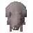

Dungeon rat

| Config name | clocktower_rat |
| NPC id | 224 |
| Combat level | 12 |
| Hitpoints | 12 |
| Attack / Strength / Defence | 10 / 10 / 10 |
| Respawn | 50 ticks |
| Options | Attack |
| Wander range | 6 tiles from spawn |
| Max range | 8 tiles from spawn |
| Defined in | scripts/quests/quest_cog/configs/quest_cog.npc |
Dungeon rat
A dirty rat.
Show all 11 spawns on the world map → Open in knowledge graph →
Drops
No drops recorded.
Locations
| Area | Coordinates | Level | Count | Map |
|---|---|---|---|---|
| Zoo (underground) | 2579, 9655 | 0 | 1 | view |
| Zoo (underground) | 2581, 9656 | 0 | 1 | view |
| Zoo (underground) | 2581, 9659 | 0 | 1 | view |
| Zoo (underground) | 2583, 9659 | 0 | 1 | view |
| Zoo (underground) | 2584, 9656 | 0 | 1 | view |
| Zoo (underground) | 2586, 9659 | 0 | 1 | view |
| Zoo (underground) | 2587, 9656 | 0 | 1 | view |
| Zoo (underground) | 2589, 9654 | 0 | 1 | view |
| Zoo (underground) | 2589, 9658 | 0 | 1 | view |
| Zoo (underground) | 2591, 9656 | 0 | 1 | view |
| Zoo (underground) | 2591, 9659 | 0 | 1 | view |
Quests
Referenced in scripts
scripts/quests/quest_cog/scripts/locs/quest_cog_food_trough.rs2scripts/quests/quest_cog/scripts/npcs/cog_dungeon_rat.rs2